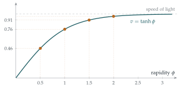

STEP III 2019, Question 2
Read the question before you go on. It is in the STEP III paper in OCR’s download of the 2019 STEP papers (a zip file): www.ocr.org.uk/Images/696590-2019-past-papers.zip
The hook
How do you know what \(e^x\) is? At school it is introduced through compound interest, or as the function that is its own derivative, or as \(\lim (1 + x/n)^n\). This question offers another answer: \(e^{kx}\) is the only differentiable function that turns addition into multiplication, \(\mathrm{f}(x + y) = \mathrm{f}(x)\mathrm{f}(y)\). The rule alone, plus one number \(\mathrm{f}'(0)\), pins the function down completely.
The second part does the same for a stranger rule, \(\mathrm{g}(x + y) = \frac{\mathrm{g}(x) + \mathrm{g}(y)}{1 + \mathrm{g}(x)\mathrm{g}(y)}\). If that formula looks familiar, it should: it is Einstein’s rule for adding velocities in special relativity, with the speed of light set to \(1\). The function it forces is \(\tanh\), and that explains why nothing can be accelerated past the speed of light.
Before you start
An equation like \(\mathrm{f}(x + y) = \mathrm{f}(x)\mathrm{f}(y)\), where the unknown is a function, is called a functional equation.
The equation holds for all \(x\) and \(y\). What is the most useful thing to try first?
Special values. Setting \(y = 0\) (or \(x = y\), or \(y = -x\)) often gives a lot of information cheaply. That is how both parts start.
Working it through
Stage 1 The value at zero
Put \(x = y = 0\): \(\mathrm{f}(0) = \mathrm{f}(0)^2\), so \(\mathrm{f}(0) = 0\) or \(1\).
What goes wrong if \(\mathrm{f}(0) = 0\)?
If \(\mathrm{f}(0) = 0\), then putting \(y = 0\) gives \(\mathrm{f}(x) = \mathrm{f}(x)\mathrm{f}(0) = 0\) for every \(x\). Then \(\mathrm{f}\) is identically zero and \(\mathrm{f}'(0) = 0\), contradicting \(\mathrm{f}'(0) = k \neq 0\). So \(\mathrm{f}(0) = 1\).■
Stage 2 The derivative everywhere from the derivative at zero
In \((*)\), write \(\mathrm{f}(x + h) = \mathrm{f}(x)\mathrm{f}(h)\). What can you take outside the limit?
\[\begin{aligned} \mathrm{f}'(x) &= \lim_{h \to 0} \frac{\mathrm{f}(x)\mathrm{f}(h) - \mathrm{f}(x)}{h} = \mathrm{f}(x)\lim_{h \to 0}\frac{\mathrm{f}(h) - 1}{h} \\ &= \mathrm{f}(x)\lim_{h \to 0}\frac{\mathrm{f}(0 + h) - \mathrm{f}(0)}{h} = \mathrm{f}(x)\,\mathrm{f}'(0) = k\,\mathrm{f}(x). \qed \end{aligned}\] The functional equation lets the behaviour near \(0\) be transported to every other point.
Stage 3 Solving \(\mathrm{f}' = k\mathrm{f}\)
Consider \(\mathrm{u}(x) = \mathrm{f}(x)e^{-kx}\). Then \(\mathrm{u}'(x) = \bigl(\mathrm{f}'(x) - k\mathrm{f}(x)\bigr)e^{-kx} = 0\), so \(\mathrm{u}\) is constant, and \(\mathrm{u}(0) = \mathrm{f}(0) = 1\). Therefore \[\mathrm{f}(x) = e^{kx}. \qed\] (Separating the variables, \(\int \frac{\mathrm{d}\mathrm{f}}{\mathrm{f}} = \int k\,\mathrm{d}x\), gives the same answer, but needs \(\mathrm{f}(x) \neq 0\); the trick with \(\mathrm{u}\) avoids that worry.)
Stage 4 The second rule
Put \(y = 0\) in the rule for \(\mathrm{g}\). What does that tell you about \(\mathrm{g}(0)\)? Where does \(|\mathrm{g}(x)| < 1\) come in?
With \(y = 0\): \(\mathrm{g}(x)\bigl(1 + \mathrm{g}(x)\mathrm{g}(0)\bigr) = \mathrm{g}(x) + \mathrm{g}(0)\), which simplifies to \(\mathrm{g}(0)\bigl(\mathrm{g}(x)^2 - 1\bigr) = 0\). Since \(|\mathrm{g}(x)| < 1\), the bracket is never zero, so \(\mathrm{g}(0) = 0\).
Now compute \(\mathrm{g}(x + h) - \mathrm{g}(x)\) using the rule, simplify, divide by \(h\) and let \(h \to 0\).
\[\mathrm{g}(x + h) - \mathrm{g}(x) = \frac{\mathrm{g}(x) + \mathrm{g}(h) - \mathrm{g}(x) - \mathrm{g}(x)^2\mathrm{g}(h)}{1 + \mathrm{g}(x)\mathrm{g}(h)} = \frac{\mathrm{g}(h)\bigl(1 - \mathrm{g}(x)^2\bigr)}{1 + \mathrm{g}(x)\mathrm{g}(h)}.\] Divide by \(h\). As \(h \to 0\), \(\frac{\mathrm{g}(h)}{h} = \frac{\mathrm{g}(h) - \mathrm{g}(0)}{h} \to \mathrm{g}'(0) = k\), and \(\mathrm{g}(h) \to \mathrm{g}(0) = 0\) (a differentiable function is continuous), so the denominator tends to \(1\). Therefore \[\mathrm{g}'(x) = k\bigl(1 - \mathrm{g}(x)^2\bigr). \qed\]
Stage 5 Solving it
Separate the variables. Which function has derivative \(\frac{1}{1 - g^2}\) for \(|g| < 1\)?
Since \(|\mathrm{g}| < 1\), we can divide: \(\dfrac{\mathrm{g}'}{1 - \mathrm{g}^2} = k\). The function \(\operatorname{artanh} g = \frac12\ln\frac{1 + g}{1 - g}\) has derivative \(\frac{1}{1 - g^2}\), so \(\frac{\mathrm{d}}{\mathrm{d}x}\operatorname{artanh}\mathrm{g}(x) = k\) and \(\operatorname{artanh}\mathrm{g}(x) = kx + C\). From \(\mathrm{g}(0) = 0\), \(C = 0\), so \[\mathrm{g}(x) = \tanh kx. \qed\] Check: the addition formula \(\tanh(A + B) = \dfrac{\tanh A + \tanh B}{1 + \tanh A\tanh B}\) is exactly the given rule.
Looking back
Special values first. Putting \(y = 0\) found \(\mathrm{f}(0)\) and \(\mathrm{g}(0)\).
From one point to everywhere. The addition law moved the derivative at \(0\) to every \(x\), turning a functional equation into a differential equation.
Uniqueness. The argument does not just check that \(e^{kx}\) and \(\tanh kx\) work; it shows they are the only possibilities. That is what makes a functional equation a definition.
What’s really going on
In everyday life, if a train moves at speed \(u\) and you walk forwards inside it at speed \(v\), your speed relative to the ground is \(u + v\). Einstein showed in 1905 that this is only an approximation. The correct rule, with \(c\) the speed of light, is \[u \oplus v = \frac{u + v}{1 + uv/c^2}.\] Measuring speeds as fractions of \(c\), this is exactly the rule for \(\mathrm{g}\). Our result says that if we write each velocity as \(v = \tanh\phi\), then velocities combine by adding the \(\phi\)s. The quantity \(\phi = \operatorname{artanh} v\) is called the rapidity. Each boost from a rocket engine adds a fixed amount of rapidity, but since \(\tanh\phi < 1\) for every \(\phi\), the velocity creeps closer and closer to the speed of light without ever reaching it (Figure 3.8.1). Combining \(0.9c\) with \(0.9c\) gives not \(1.8c\) but \(\frac{1.8}{1.81}c \approx 0.9945c\).

Cauchy’s functional equation
The simplest functional equation is \(\mathrm{f}(x + y) = \mathrm{f}(x) + \mathrm{f}(y)\), studied by Cauchy in 1821. If \(\mathrm{f}\) is differentiable, the method of this question shows \(\mathrm{f}(x) = kx\). In fact continuity is enough. But without any regularity assumption at all, there are other, utterly wild solutions, whose graphs are scattered densely over the whole plane. Georg Hamel constructed them in 1905; the construction needs the axiom of choice, and it is impossible to write any of them down explicitly. This is one reason the question insists that \(\mathrm{f}\) is differentiable: the hypothesis is not a formality.
Homomorphisms
\(\mathrm{f}(x + y) = \mathrm{f}(x)\mathrm{f}(y)\) says that \(\mathrm{f}\) turns the addition of real numbers into the multiplication of positive real numbers, respecting the structure of both. In the language of first-year algebra, \(\mathrm{f}\) is a group homomorphism from \((\mathbb{R}, +)\) to \((\mathbb{R}_{>0}, \times)\), and the logarithm is its inverse. Many of the most important functions in mathematics are characterised in this way, by the structure they preserve. In Section 7.6 we meet the geometric meaning of \(\tanh\): it measures “hyperbolic angle”, and its addition law comes from composing hyperbolic rotations.
The thinking skill
Instead of a formula, describe a function by a rule it obeys, and prove that only one function obeys it.
This is how mathematicians often think about \(\exp\), \(\sin\), \(\cos\) and many other functions: not as formulas, but as the unique solutions of functional or differential equations. It explains why they matter, not just how to calculate them.
Try this next
A tangent rule. Suppose \(\mathrm{g}\) is differentiable, \(\mathrm{g}'(0) = k \neq 0\), and \(\mathrm{g}(x + y) = \dfrac{\mathrm{g}(x) + \mathrm{g}(y)}{1 - \mathrm{g}(x)\mathrm{g}(y)}\) whenever both sides are defined. Show that \(\mathrm{g}'(x) = k\bigl(1 + \mathrm{g}(x)^2\bigr)\) and deduce that \(\mathrm{g}(x) = \tan kx\) near \(x = 0\).
Cauchy’s equation. If \(\mathrm{f}\) is differentiable and \(\mathrm{f}(x + y) = \mathrm{f}(x) + \mathrm{f}(y)\) for all \(x\), \(y\), show that \(\mathrm{f}(x) = kx\).
Without derivatives. harder Suppose only that \(\mathrm{f}(x + y) = \mathrm{f}(x)\mathrm{f}(y)\) and \(\mathrm{f}(1) = a > 0\). Show that \(\mathrm{f}(n) = a^n\) for positive integers \(n\), then that \(\mathrm{f}(1/n) = a^{1/n}\), and then that \(\mathrm{f}(q) = a^q\) for every positive rational \(q\). (Why is continuity needed to go further?)
Rocket science. A rocket can increase its speed by \(0.5c\) relative to its current frame each time it fires. Starting from rest, what is its speed (relative to the start) after \(2\), \(3\) and \(4\) firings? Use rapidities.
Further reading
Christopher Small, Functional Equations and How to Solve Them (Springer). An accessible introduction aimed at problem-solvers.
Edwin Taylor & John Wheeler, Spacetime Physics (W. H. Freeman). The classic introduction to special relativity, using rapidity throughout.
Tom Körner, Calculus for the Ambitious (Cambridge University Press). Defines the exponential and trigonometric functions from their properties, exactly in the spirit of this section.